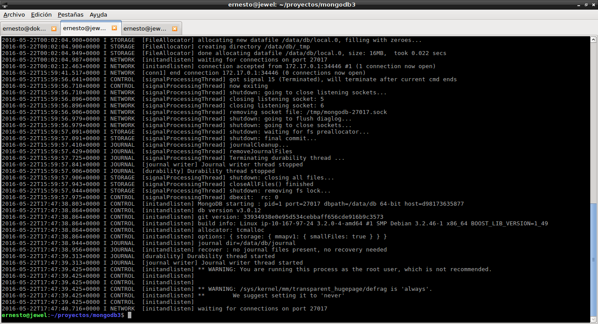
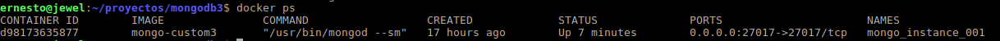
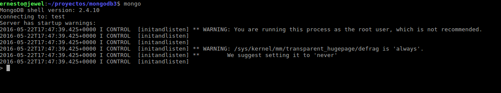

Crear una imagen Docker para MongoDB 3
Posted on dom 22 mayo 2016 in Tutorial de Docker • 3 min read
En Docker hub, la gente de MongoDB tiene una imagen oficial para varias versiones de mongo.
Pero para los que quieren crear y probar imágenes les dejo una imagen creada a partir de Debian.
Los artículos anteriores sobre Docker son:
-
Iniciando Django con docker usando docker-compose con postgresql como microservicio.
-
Crear un entorno de Integración y Despligue continue con Docker para node.js.
-
Ejecutar una prueba de unittest en Python con un contenedor Docker.
-
Montar una Plataforma como servicio (PaaS) con Dokku (docker).
-
Instalar Jenkins por medio de Docker y crear una imagen Docker de Jenkins
El archivo Dockerfile se encuentra en github en el siguiente enlace. Su contenido es el siguiente:
FROM debian
MAINTAINER Ernesto Crespo <ecrespo@gmail.com>
USER root
WORKDIR /code
RUN echo "deb http://ftp.debian.org/debian jessie main contrib non-free" > /etc/apt/sources.list
RUN apt-key adv --keyserver keyserver.ubuntu.com --recv 7F0CEB10
RUN echo "deb http://repo.mongodb.org/apt/debian wheezy/mongodb-org/3.0 main" | tee /etc/apt/sources.list.d/mongodb-org-3.0.list
RUN apt-get update && apt-get install -y mongodb-org
RUN apt-get install -y sudo vim less mc locate
RUN apt-get clean
RUN mkdir -p /data/db
RUN echo "mongodb ALL=NOPASSWD: ALL" >> /etc/sudoers
EXPOSE 27017
ENTRYPOINT ["/usr/bin/mongod"]
Para construir la imagen se ejecuta:
docker build -t <nombreImagen> .
En este caso fue:
docker build -t mongo3-custom .
Para quien quiera bajar la imagen ejecuta:
docker pull ecrespo/mongo3-custom
Para correr un contenedor usando persistencia de datos en /srv/data/db se ejecuta:
docker run -p 27017:27017 -v /srv/data/db:/data/db:rw --name mongo_instance_001 -d mongo-custom3 --smallfiles
Para ver el log del contenedor se ejecuta docker logs <idcontenedor|nombrecontenedor>

Para ver el contenedor corriendo se ejecuta docker ps:

Para acceder a mongo se ejecuta:
mongo

Para ver la información del contenedor se ejecuta el comando docker inspect:
docker inspect mongo_instance_001
[
{
"Id": "d981736358770a23b5123ca1e6490c35bacf40ecf571b265bf98296420b97131",
"Created": "2016-05-22T00:01:48.049849422Z",
"Path": "/usr/bin/mongod",
"Args": [
"--smallfiles"
],
"State": {
"Status": "running",
"Running": true,
"Paused": false,
"Restarting": false,
"OOMKilled": false,
"Dead": false,
"Pid": 3984,
"ExitCode": 0,
"Error": "",
"StartedAt": "2016-05-22T17:47:36.658752846Z",
"FinishedAt": "2016-05-22T16:53:45.66317329Z"
},
"Image": "sha256:a17c12c4f560fbc39e8e30bf561c76d86947e2926112bc87d12744e63be7eaa7",
"ResolvConfPath": "/var/lib/docker/containers/d981736358770a23b5123ca1e6490c35bacf40ecf571b265bf98296420b97131/resolv.conf",
"HostnamePath": "/var/lib/docker/containers/d981736358770a23b5123ca1e6490c35bacf40ecf571b265bf98296420b97131/hostname",
"HostsPath": "/var/lib/docker/containers/d981736358770a23b5123ca1e6490c35bacf40ecf571b265bf98296420b97131/hosts",
"LogPath": "/var/lib/docker/containers/d981736358770a23b5123ca1e6490c35bacf40ecf571b265bf98296420b97131/d981736358770a23b5123ca1e6490c35bacf40ecf571b265bf98296420b97131-json.log",
"Name": "/mongo_instance_001",
"RestartCount": 0,
"Driver": "aufs",
"MountLabel": "",
"ProcessLabel": "",
"AppArmorProfile": "",
"ExecIDs": null,
"HostConfig": {
"Binds": [
"/srv/data/db:/data/db:rw"
],
"ContainerIDFile": "",
"LogConfig": {
"Type": "json-file",
"Config": {}
},
"NetworkMode": "default",
"PortBindings": {
"27017/tcp": [
{
"HostIp": "",
"HostPort": "27017"
}
]
},
"RestartPolicy": {
"Name": "no",
"MaximumRetryCount": 0
},
"AutoRemove": false,
"VolumeDriver": "",
"VolumesFrom": null,
"CapAdd": null,
"CapDrop": null,
"Dns": [],
"DnsOptions": [],
"DnsSearch": [],
"ExtraHosts": null,
"GroupAdd": null,
"IpcMode": "",
"Cgroup": "",
"Links": null,
"OomScoreAdj": 0,
"PidMode": "",
"Privileged": false,
"PublishAllPorts": false,
"ReadonlyRootfs": false,
"SecurityOpt": null,
"StorageOpt": null,
"UTSMode": "",
"UsernsMode": "",
"ShmSize": 67108864,
"ConsoleSize": [
0,
0
],
"Isolation": "",
"CpuShares": 0,
"Memory": 0,
"CgroupParent": "",
"BlkioWeight": 0,
"BlkioWeightDevice": null,
"BlkioDeviceReadBps": null,
"BlkioDeviceWriteBps": null,
"BlkioDeviceReadIOps": null,
"BlkioDeviceWriteIOps": null,
"CpuPeriod": 0,
"CpuQuota": 0,
"CpusetCpus": "",
"CpusetMems": "",
"Devices": [],
"DiskQuota": 0,
"KernelMemory": 0,
"MemoryReservation": 0,
"MemorySwap": 0,
"MemorySwappiness": -1,
"OomKillDisable": false,
"PidsLimit": 0,
"Ulimits": null,
"CpuCount": 0,
"CpuPercent": 0,
"BlkioIOps": 0,
"BlkioBps": 0,
"SandboxSize": 0
},
"GraphDriver": {
"Name": "aufs",
"Data": null
},
"Mounts": [
{
"Source": "/srv/data/db",
"Destination": "/data/db",
"Mode": "rw",
"RW": true,
"Propagation": "rprivate"
}
],
"Config": {
"Hostname": "d98173635877",
"Domainname": "",
"User": "root",
"AttachStdin": false,
"AttachStdout": false,
"AttachStderr": false,
"ExposedPorts": {
"27017/tcp": {}
},
"Tty": false,
"OpenStdin": false,
"StdinOnce": false,
"Env": [
"PATH=/usr/local/sbin:/usr/local/bin:/usr/sbin:/usr/bin:/sbin:/bin"
],
"Cmd": [
"--smallfiles"
],
"Image": "mongo-custom3",
"Volumes": null,
"WorkingDir": "/code",
"Entrypoint": [
"/usr/bin/mongod"
],
"OnBuild": null,
"Labels": {}
},
"NetworkSettings": {
"Bridge": "",
"SandboxID": "9aff46c57baeb071a5762c2fcdac37ab5612901c15d78f61f5188185757699bd",
"HairpinMode": false,
"LinkLocalIPv6Address": "",
"LinkLocalIPv6PrefixLen": 0,
"Ports": {
"27017/tcp": [
{
"HostIp": "0.0.0.0",
"HostPort": "27017"
}
]
},
"SandboxKey": "/var/run/docker/netns/9aff46c57bae",
"SecondaryIPAddresses": null,
"SecondaryIPv6Addresses": null,
"EndpointID": "f548e847fd8d031f26ebe687c24c709332efa10a2d5752679e6458cf1fbad356",
"Gateway": "172.17.0.1",
"GlobalIPv6Address": "",
"GlobalIPv6PrefixLen": 0,
"IPAddress": "172.17.0.2",
"IPPrefixLen": 16,
"IPv6Gateway": "",
"MacAddress": "02:42:ac:11:00:02",
"Networks": {
"bridge": {
"IPAMConfig": null,
"Links": null,
"Aliases": null,
"NetworkID": "b0796b4ed424447971b67d367f762d83141a38e0aacb0a8bc37e70a965d36ac0",
"EndpointID": "f548e847fd8d031f26ebe687c24c709332efa10a2d5752679e6458cf1fbad356",
"Gateway": "172.17.0.1",
"IPAddress": "172.17.0.2",
"IPPrefixLen": 16,
"IPv6Gateway": "",
"GlobalIPv6Address": "",
"GlobalIPv6PrefixLen": 0,
"MacAddress": "02:42:ac:11:00:02"
}
}
}
}
]
Se muestra la información del nombre del contenedor, el puerto que se tiene para acceder al mismo, su IP, su dirección mac entre otras cosas.
¡Haz tu donativo! Si te gustó el artículo puedes realizar un donativo con Bitcoin (BTC) usando la billetera digital de tu preferencia a la siguiente dirección: 17MtNybhdkA9GV3UNS6BTwPcuhjXoPrSzV
O Escaneando el código QR desde la billetera: